# 数据分析
# 矢量数据分析
# 几何图形的基本性质
线状地物的长度计算（矢量）
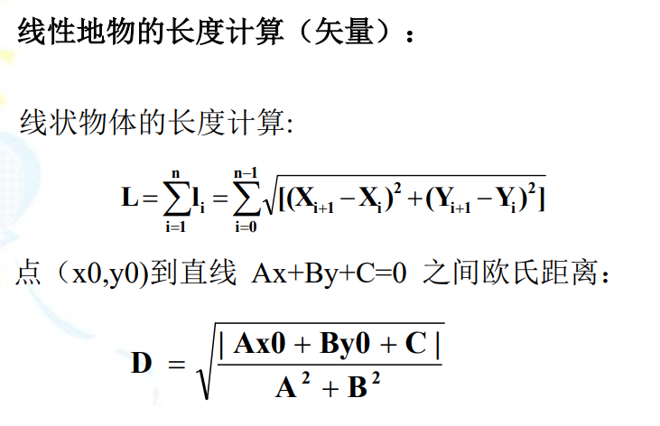线性地物的长度计算（栅格）
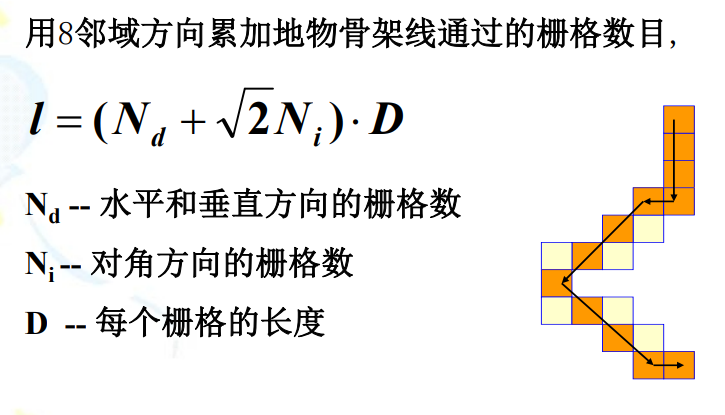多边形的面积的量算（矢量，辛普森Simposion公式）
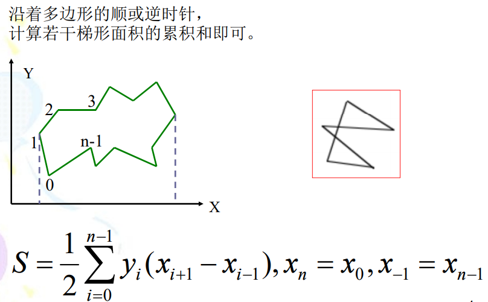重(质)心的计算
区域的质心是目标保持均匀分布的平衡点，它通过对目标坐标值加权平均求得 。
质心通常是指一个多边形或面积的几何中心。 在有些情况下质心描述的不是几何中心，而是分5布中心，或加权的平均中心。
应用范围极其广泛，如：
- 商场选址应该位于具有最佳势能的定位点处。
- 经济的增长极可能发生在高势能地区。
# 缓冲区分区
邻近/接近(proximity)：由于地域相关性，两个邻点距离越近，二者之间的联系或属性越接近。
缓冲距离(buffer dist.)：通常采用缓冲距离表达地物对周边其他的影响范围，缓冲距离大小表示其影响强度。
方向性：线或者多边形几何对象可以沿其某一侧生成缓冲区。
# 缓冲区
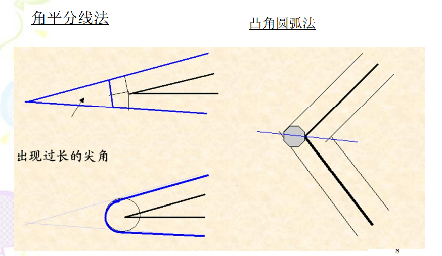# 常用缓冲区模型
缓冲区分析模型用来描述主体对象的邻近区域内，不 同地区受主体对象影响的变化。在进行空间缓冲区分 析时，通常要将研究的问题抽象为以下三类因素来进行分析：
主体对象：主体对象主要包括点、线、面对象；
邻近对象：指受主体对象影响的客体；
对象的作用条件：表示主体对邻近对象施加作用的影响条件或强度。根据主体对邻近对象作用的不同， 一般分线性模型、指数模型、其它复杂模型等。
线性模型
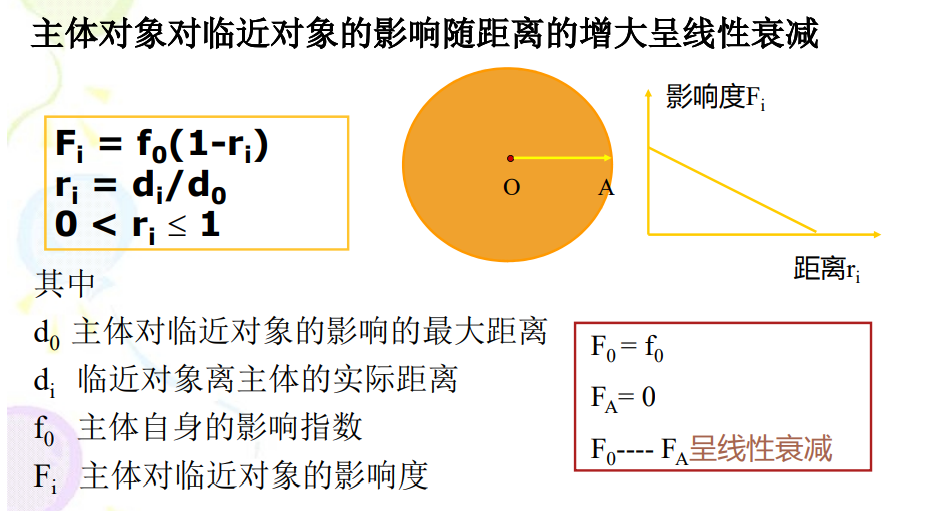二次模型
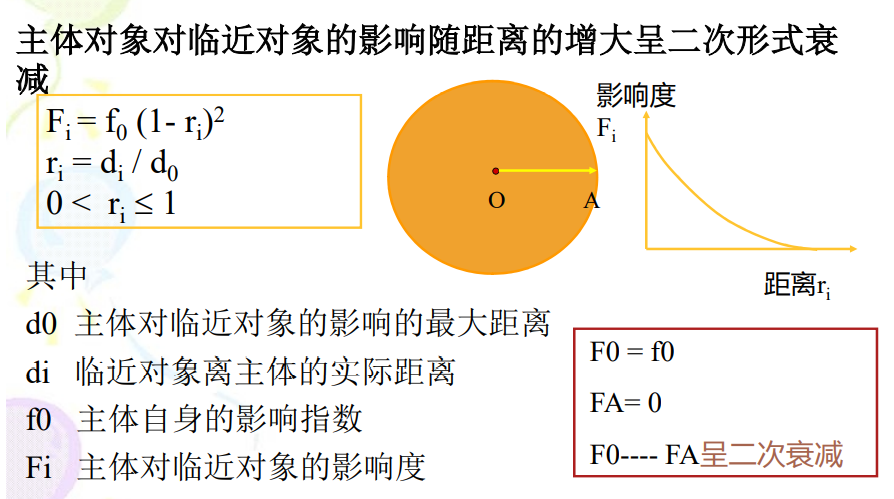指数模型
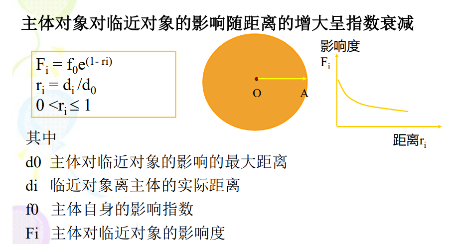其他模型
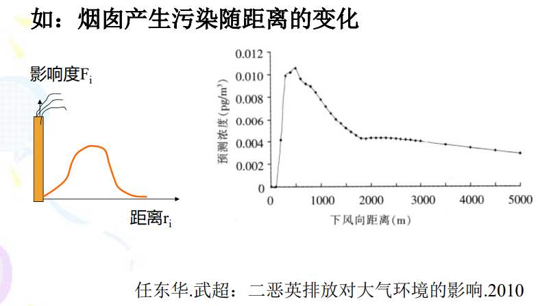# 缓冲区分析案例
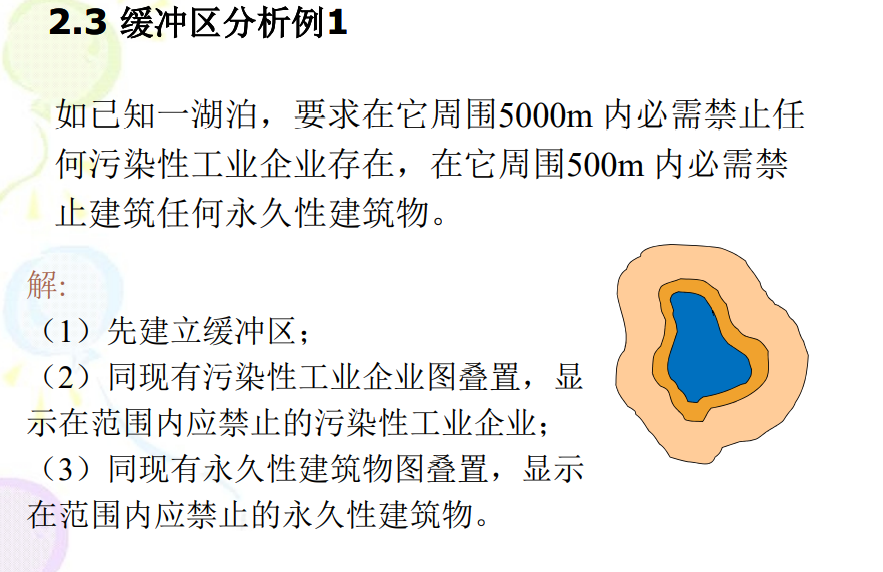 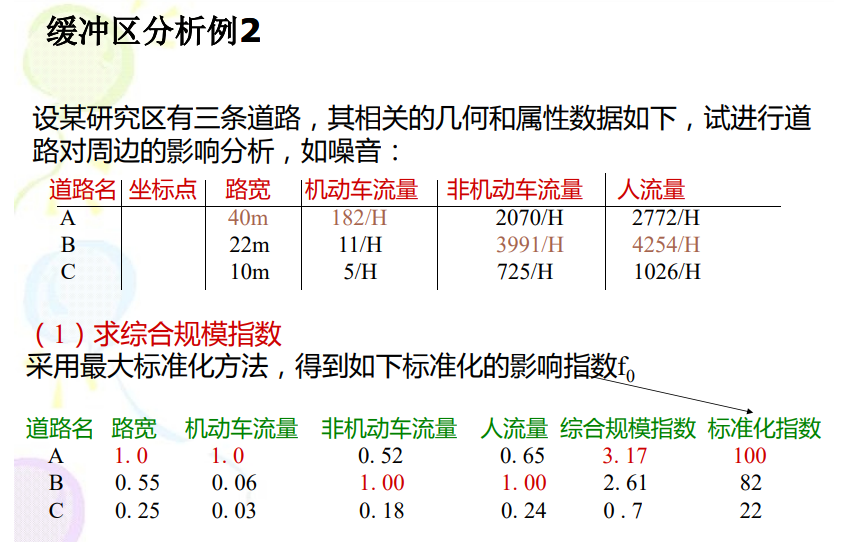 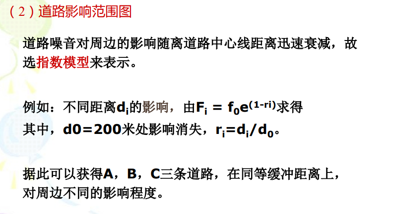# 地图叠置分析
# 基本操作
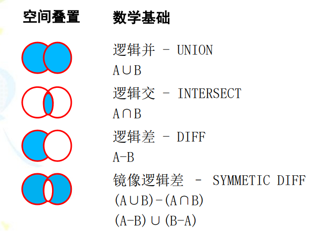# 泰森多边形生成
# （点）模式分析【待补充：PPT内容和白话空间统计】
模式分析是描述和分析空间要素分布模式的定量方法。
在整体水平上，揭示某分布模式是随机，弥散还是聚集的。
在局部水平上，检测某分布模式是否含有高值或低值的局部聚集。
# 密度分析方法
采样点
样本生成：Random Point，Fishnet和Sampling Network Design。
样本空间分布：random，clumped，dispersed
点密度统计
线密度统计
线密度：单位面积内，线的长度
# 最近邻分析方法
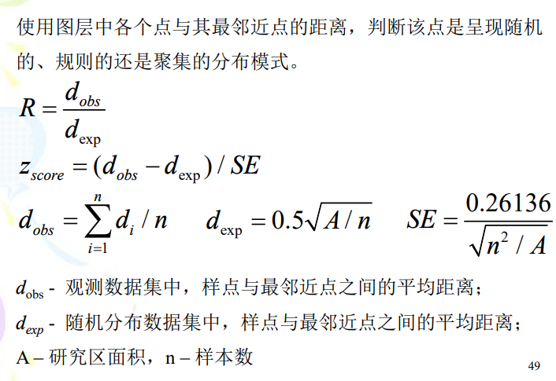 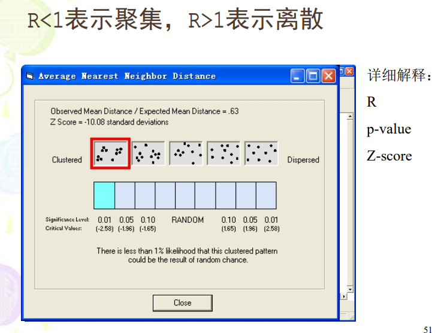
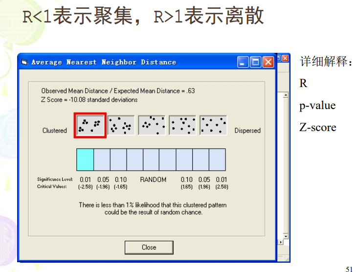 # 空间聚合分析
Ripley K函数
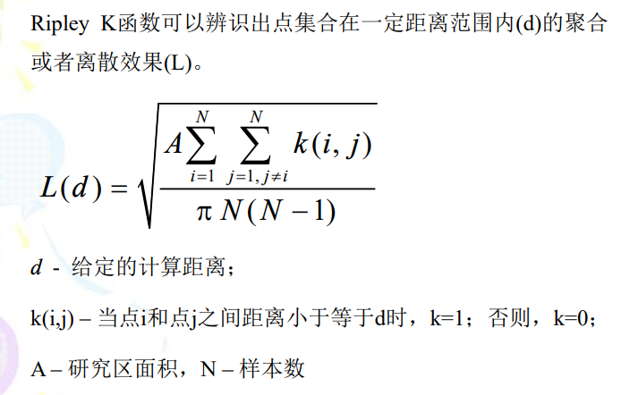 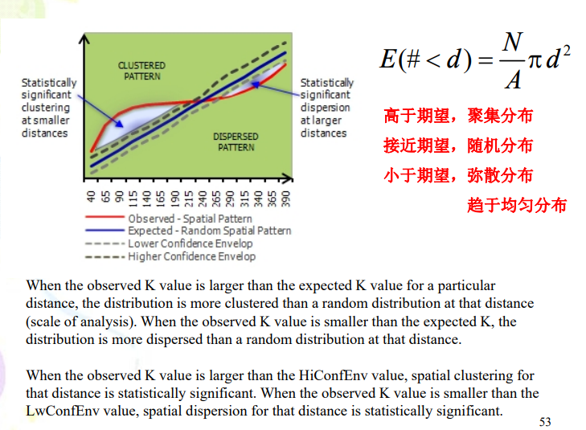
# 空间自相关
与前面的几点密度，最近邻和聚合都是纯粹的与距离相关的；而空间自相关是还要依据样本点的属性.
莫兰指数
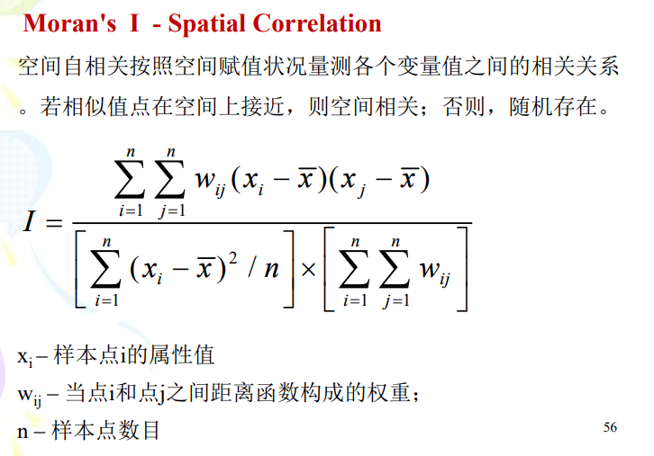 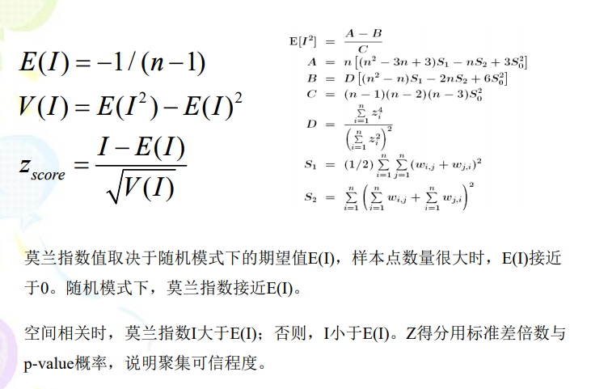
# G统计量
# 栅格数据分析
# 局域运算
局域运算由单个或者多个栅格生成一个新的栅格，新栅格像元值由输入栅格对应位置的像元计算获得
掩膜（mask）
栅格空值（None）
栅格图层计算函数：
数学函数
重新分类
常用函数
条件表达式Con
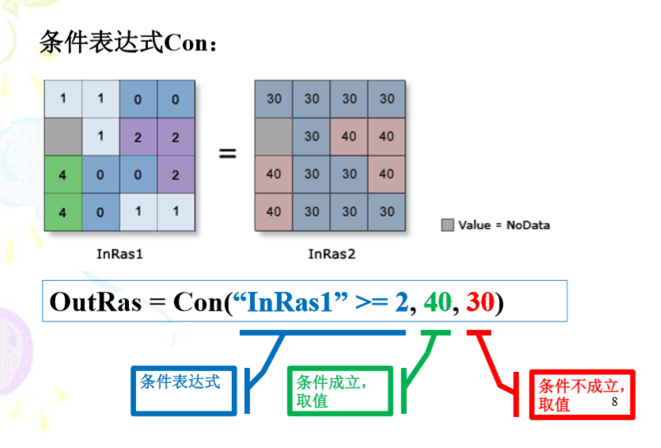设置空值SetNull
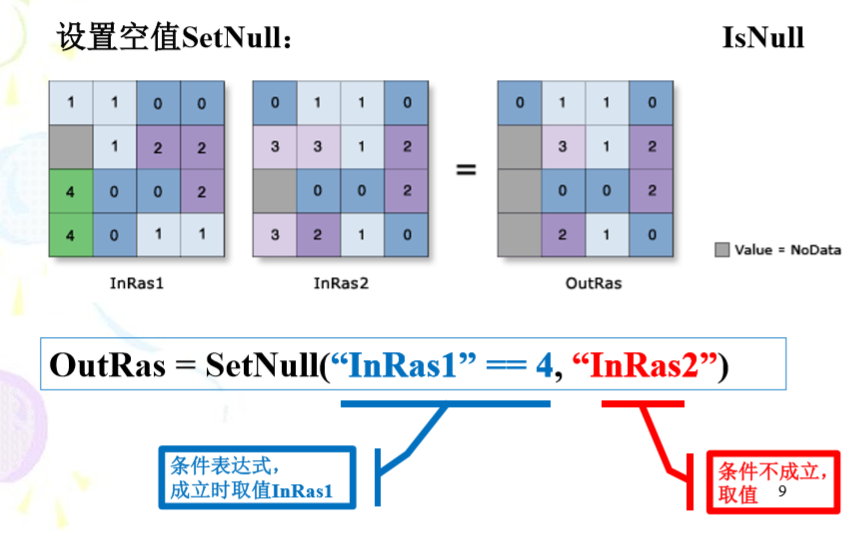Pick
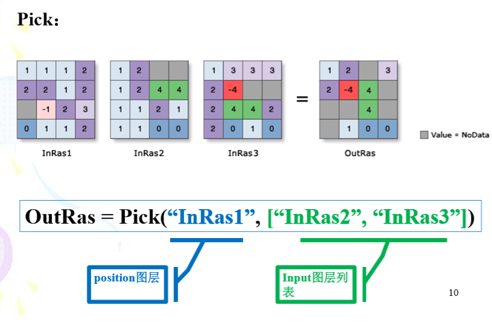Diff
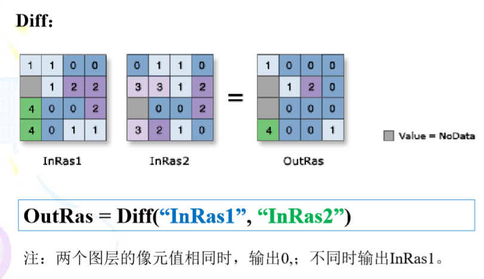重分类
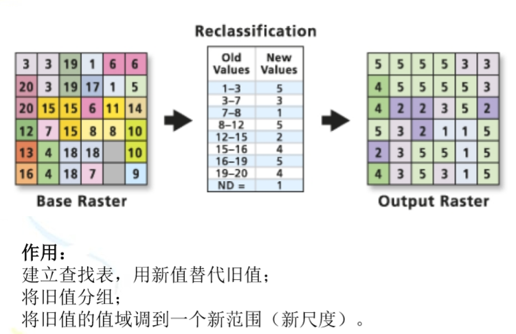
单一栅格运算
多栅格运算
# 领域运算
普通领域运算涉及一个焦点像元和其他滤波窗口内的一组像元。针对一个输入栅格，用户可自定义滤波窗口，方式灵活。
常见的滤波窗口：用于栅格增强，检测
- 方形
- 圆形
- 环形
- 楔形
地形分析：计算坡向，坡度，曲率
区域内的统计分析：众数，最大值，最小值，中位数，均值等
- 滤掉小图斑
# 分区运算
可对一个或者两个栅格图层进行处理。若一个输入图层，则作每个分区的几何特征（面积，厚度）；若两个输入图层，则作分区内的统计
分区计算：
- Tabulate Area
- Zonal Statistics
- Zonal Histogram
- Zonal Geometry
- Zonal Fill
# 距离量测
- 自然距离：两个单元格之间的直线距离